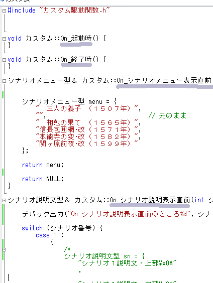

概要
前の章では、ModDebuggerとデバッグ出力を学習しました。
ここでは、ModDebuggerを利用して、「イベントハンドラ」という概念を学習します。
「On_****」というが「イベントハンドラ」
ScenarioModでは、イベントハンドラとは「On_****」という形で提供されています。
この「On_****」とは、何かのタイミングでTSModが呼び出し、
自動的に実行されるモノ」といった理解をしてください。

- 例えば、「On_起動時」という「イベントハンドラ」は、
天翔記が起動する際に実行されます。
- 「On_終了時」という「イベントハンドラ」は、
天翔記が終了する際に実行されます。
- 前の章で利用した「On_シナリオ説明表示直前」という「イベントハンドラ」は、
シナリオ説明文が表示される「直前」のタイミングで実行されます。
このように「On_****」というイベントハンドラは全て「何らかのタイミング」で呼び出されるモノなのです。
実際に確認してみる
それぞれのイベントハンドラがいつ発動するのか、 どのようなタイミングで呼び出されるのか確認してみましょう。
下図のように
等をわかりやすい形で足しこみます。
天翔記を実行し、シナリオを選択し、天翔記を終了するまでの間に、
ModDebuggerの方に、以下のような文字列が表示されたはずです。

このように、「デバッグ出力」という機能を使えば、
イベントハンドラがいつ実行されるのか確認がとりやすいことがわかりました。
その他
以上で、「イベントハンドラという概念」の説明を終了します。 お疲れ様でした。